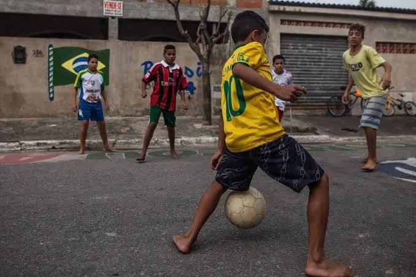

A Street Soccer nasceu da paixão pelo futebol e do desejo de oferecer aos atletas e apaixonados pelo esporte produtos de qualidade com praticidade e confiança. Nosso objetivo é conectar jogadores de todos os níveis aos melhores equipamentos, proporcionando uma experiência de compra simples, segura e acessível.
Trabalhamos com uma ampla variedade de produtos, incluindo chuteiras, camisas, bolas, meias, caneleiras, luvas e acessórios, sempre buscando unir desempenho, conforto e estilo. Selecionamos cuidadosamente cada item para garantir que nossos clientes encontrem tudo o que precisam para treinar, competir ou aproveitar uma partida entre amigos.
Mais do que uma loja virtual, a Street Soccer acredita que o futebol é capaz de unir pessoas, criar histórias e inspirar novos desafios. Por isso, buscamos oferecer um atendimento de qualidade, preços competitivos e uma experiência de compra que reflita a paixão pelo esporte.
Nossa missão é incentivar o espírito esportivo, levando equipamentos de qualidade para jogadores de todas as idades e níveis de habilidade, contribuindo para que cada partida seja vivida com confiança e dedicação.
Street Soccer — Equipando sua paixão pelo futebol.